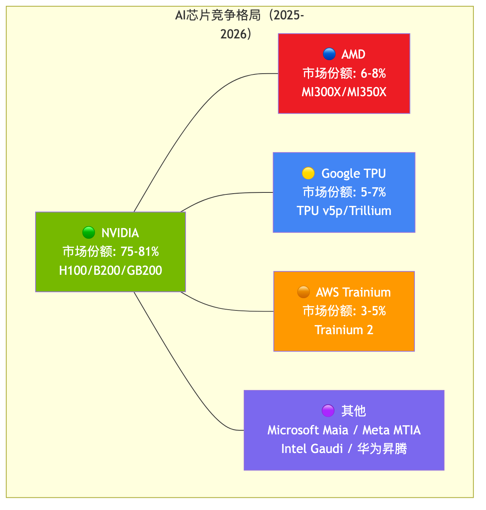
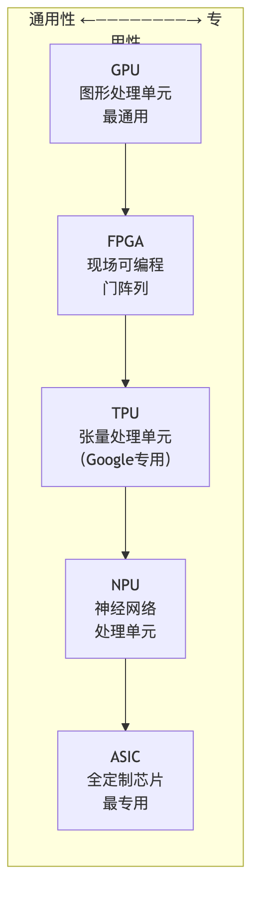
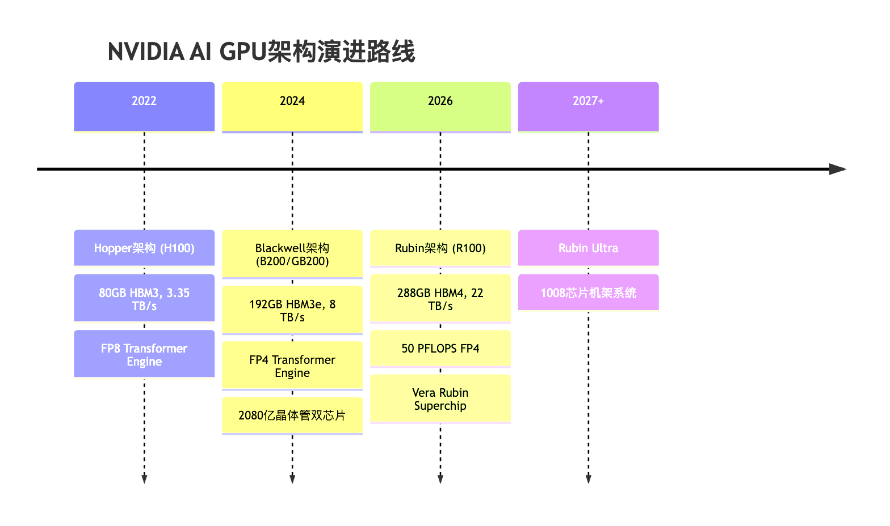
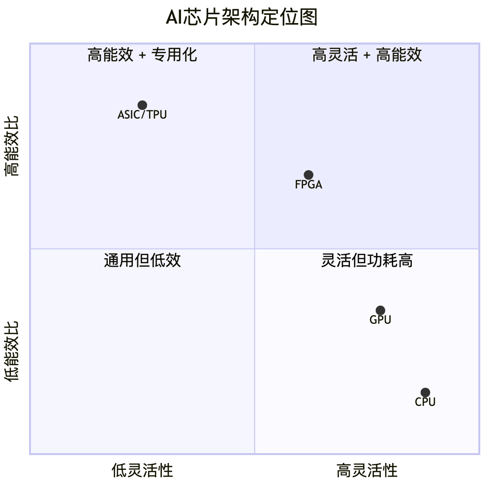
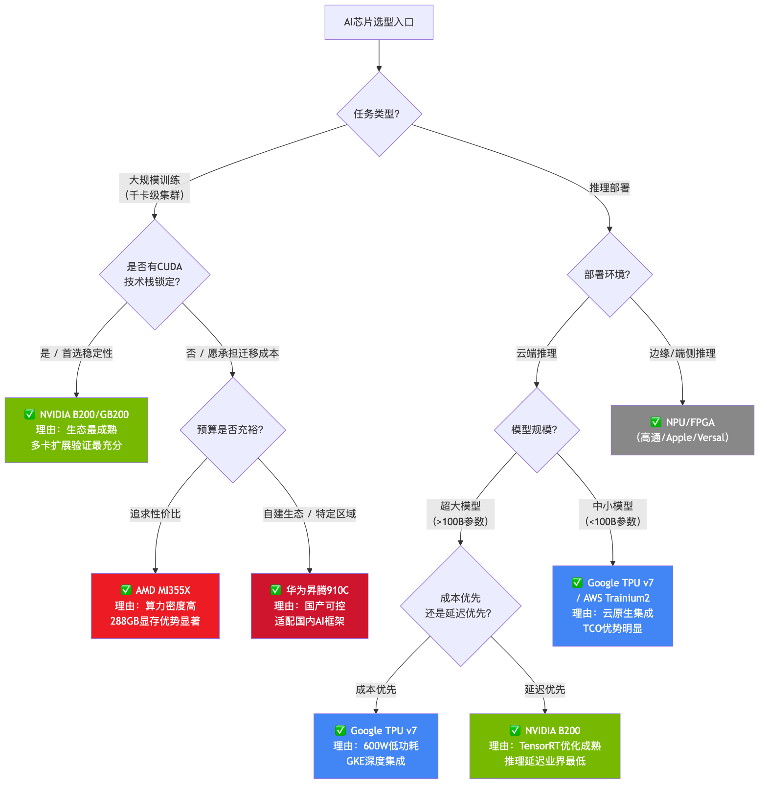

人工智能正以前所未有的速度重塑全球科技产业格局。从2020年OpenAI发布GPT-3（1750亿参数）到2023年GPT-4（据估计超万亿参数的混合专家架构），再到2025年各厂商竞相推出的多模态、长上下文、推理增强型大模型，AI模型的参数规模与计算需求呈现出远超摩尔定律的指数级增长曲线。根据OpenAI与Epoch AI的研究数据，前沿AI模型的训练算力需求大约每18个月翻4倍，显著快于芯片制程进步所能提供的性能增益。
这种算力需求的爆发式增长正在从根本上重塑半导体产业。AI芯片——即专为机器学习训练和推理任务设计或优化的处理器——已从数据中心的辅助角色跃升为整个科技产业链的核心资产。一块旗舰级AI加速卡的售价从数万美元飙升至数十万美元，而一个完整的AI训练集群动辄耗资数十亿美元。算力已不仅是技术问题，更是战略资源。
与此同时，AI工作负载正在分化为两大类别，对芯片提出了截然不同的需求：
这两类需求的分野催生了截然不同的芯片设计哲学，也是理解当前AI芯片多元化竞争格局的关键框架。
根据多家市场研究机构的数据综合分析，全球AI芯片市场正处于高速扩张期：
数据来源：Silicon Analysts, Statista, MarketsandMarkets 综合估算
NVIDIA凭借其CUDA生态系统的深厚护城河和对台积电CoWoS先进封装产能60%的产能锁定，在2024年触及约87%的收入份额峰值。然而，随着整体市场（TAM）的急速膨胀以及竞争者的涌入，这一份额预计将在2026年回落至75%左右——但值得注意的是，这并非业务收缩，而是市场扩张速度超过了单一厂商的捕获能力。
当前的竞争格局可以概括为以下几层：

值得特别关注的是，超大规模云服务商（Hyperscalers）的自研芯片正成为不可忽视的力量。Google、AWS、Microsoft、Meta等公司的定制硅片总投资已超过$500亿，这些芯片虽主要用于内部工作负载，但正在逐步侵蚀NVIDIA在推理市场的份额。训练市场方面，NVIDIA仍保持超过90%的份额；而推理市场的份额已被压缩至60-75%。
AI芯片按照架构的通用性与专用性，可排列在一个频谱上：

本报告将按上述分类逐一深入分析各类AI芯片的技术架构、性能指标、代表产品、适用场景与客户案例，并在最后提供横向对比矩阵与选型决策框架。
从第一章的全景概览中，我们已经看到AI芯片市场正呈现出多元化竞争格局。而在这幅全景图中，GPU无疑占据着最核心、最醒目的位置。本章将深入剖析GPU为何成为AI计算的绝对主力，并逐一解读NVIDIA、AMD与Intel三大厂商的技术路线与市场博弈。
AI模型的核心计算本质上是大规模矩阵乘法与张量运算。以一个拥有数千亿参数的大语言模型为例，其前向推理过程中每一层Transformer都需要执行维度高达数万×数万的矩阵乘加操作。这类运算具有高度规则性和数据并行性——成千上万个乘加操作彼此独立，可以同时执行。
GPU的架构恰好与这一需求高度契合。与CPU采用少量高性能核心（通常8-128核）执行复杂控制流不同，GPU拥有数以千计的轻量级计算核心（如NVIDIA Blackwell架构拥有超过两万个CUDA核心），能够在单个时钟周期内并行处理海量浮点运算。以NVIDIA B200为例，其峰值FP4算力可达约20 PFLOPS（petaFLOPS），这意味着每秒可执行2×10¹⁶次4位浮点运算——这一数字是当代最强服务器CPU算力的数百倍。
此外，现代AI GPU还配备了专用矩阵运算单元。NVIDIA自Volta架构起引入的Tensor Core、AMD CDNA架构中的Matrix Core，均是专门为混合精度矩阵乘加（GEMM）操作优化的硬件模块。这些专用单元使GPU在AI工作负载上的能效比相较通用计算提升了一个数量级。
硬件性能只是GPU统治AI计算的一半原因，另一半在于软件生态。NVIDIA自2006年推出CUDA（Compute Unified Device Architecture）以来，历经近二十年的持续投入，已构建起覆盖底层驱动、编译器、数学库、深度学习框架到应用层工具链的完整软件栈。
具体而言，cuBLAS（线性代数）、cuDNN（深度学习原语）、TensorRT（推理优化）、NCCL（多GPU通信）等核心库已成为AI开发的事实标准。PyTorch、TensorFlow、JAX等主流框架均以CUDA作为首选GPU后端。全球数百万AI开发者在CUDA生态中积累了大量代码资产、调优经验和最佳实践。
这种生态锁定效应极其强大：即便竞争对手在硬件参数上接近甚至超越NVIDIA，客户迁移到新平台所面临的软件适配成本、性能调优周期和工程风险仍是巨大障碍。AMD的ROCm生态和Intel的oneAPI虽然在快速追赶，但在库的完备性、社区活跃度和开箱即用的兼容性上仍存在明显差距。
NVIDIA在AI GPU市场的份额长期维持在80%以上，在高端训练芯片领域更是接近垄断。其成功并非偶然，而是源于持续的架构创新、激进的产品迭代节奏以及深厚的生态护城河。
2024年，NVIDIA正式推出基于Blackwell架构的新一代AI GPU，实现了从Hopper架构的全面跃迁。
核心规格与架构创新：
Blackwell GPU采用双芯片组（dual-die）封装设计，总计集成约2,080亿个晶体管，是半导体工业量产的最大规模单一GPU芯片。B200 GPU配备192GB HBM3e高带宽显存，显存带宽达8 TB/s，TDP功耗约1,000W（风冷配置）。在NVL72机架配置中，单GPU功耗可达约1,200W。
Blackwell架构引入了第二代Transformer Engine，原生支持FP4（4位浮点）精度计算。相比Hopper架构的FP8支持，FP4将推理吞吐量再度翻倍，同时通过智能精度管理保持模型输出质量。这一创新对于大规模推理部署意义重大——在token生成成本已成为大模型商业化关键瓶颈的当下，FP4支持可显著降低单位推理成本。
GB200 NVL72——重新定义AI计算基础设施：
GB200 NVL72是Blackwell架构的旗舰系统形态，以完整液冷机架为交付单位。每个机架集成36颗Grace CPU与72颗Blackwell GPU，通过第五代NVLink互连实现GPU间高速通信，NVLink总带宽达130 TB/s。整机架配备13.4 TB HBM3e显存，总内存带宽576 TB/s。
在算力方面，单个NVL72机架可提供FP4 1,440 PFLOPS、FP8 720 PFLOPS的峰值性能。NVIDIA官方数据显示，GB200 NVL72在大模型推理任务上较H100快30倍，在训练任务上快4倍。但需注意，这些数字基于特定基准测试配置，实际工作负载中的提升幅度会因模型架构和优化程度而异。
整机架功耗约120 kW，对数据中心的供电和散热提出了极高要求。这也是为何GB200 NVL72采用全液冷设计——传统风冷已无法有效应对如此高密度的热负荷。
NVIDIA的利润能力令人瞩目： 据行业分析，H100的制造成本约为$3,320，而终端售价约$28,000，对应毛利率高达88.1%。这一超高利润率既体现了NVIDIA的定价权，也反映了市场对其产品的刚性需求。
云端部署价格方面，各主要云服务商的GPU实例定价存在显著差异：CoreWeave约$10.50/小时/GPU，Oracle约$16/小时，Azure约$27/小时。定价差异主要反映了各平台的供给能力、合约结构和增值服务差异。
Blackwell系列产品的客户覆盖了全球AI产业的核心参与者：
全球主要云服务商和AI企业在2024-2025年的资本开支中，NVIDIA GPU相关采购占据了绝对主导地位。这种集中采购趋势进一步巩固了NVIDIA的市场地位和议价能力。
NVIDIA维持着约一年一迭代的激进产品节奏。继Blackwell之后，下一代Rubin架构预计于2026年下半年推出。
R100 GPU的关键升级包括：
更远期的Vera Rubin Ultra规划了1,008芯片机架系统，将AI集群的计算密度推向新的极限。

在NVIDIA主导的AI GPU市场中，AMD是目前最具威胁的挑战者。凭借CDNA系列架构的持续进化和日益壮大的客户基础，AMD正在加速蚕食NVIDIA的市场份额。
2025年，AMD推出基于CDNA 4架构的MI350系列，实现了相较上一代MI300X的代际性能跃升。
架构与制程：
MI350系列采用台积电3nm先进工艺，总计集成1,850亿个晶体管。芯片采用Chiplet设计，由8个XCD（Accelerator Complex Die）和2个IOD（I/O Die）组成，共包含256个计算单元（CU）、16,384个流处理器和1,024个专用矩阵核心。这一架构在保持良好良率的同时实现了极高的计算密度。
两款产品定位：
算力表现：
MI350系列在混合精度算力上表现亮眼：FP4/FP6峰值算力达20 PFLOPS，FP8算力达80.5 PFLOPS（含2:4稀疏加速；密集FP8约40 PFLOPS）。在实际AI工作负载测试中，AMD公布的数据显示：基于Llama 3.1 405B模型的推理吞吐量较MI300X提升35倍，DeepSeek R1推理性能提升近3倍。更值得关注的是，MI350X支持在单卡上同时运行多达8个700亿参数模型实例，这对推理服务的部署密度和成本效率意义重大。
成本竞争力： MI300X的制造成本约为$5,300，售价约$15,000，对应毛利率约64.7%。虽然低于NVIDIA的88.1%，但AMD的定价策略更为激进，为客户提供了更具性价比的选择。
AMD的数据中心业务正在经历爆发式增长。2024年，AMD数据中心部门收入翻倍至$12.6B（约126亿美元），其中AI GPU贡献了核心增长动力。市场普遍预计，随着MI350系列的大规模出货，AMD在2026年的AI GPU相关收入有望突破$15B。
在客户拓展方面，MI350系列已获得多家顶级科技公司的订单：
目前，AMD在全球AI GPU市场中的份额约为6%-8%。虽然与NVIDIA的80%+差距仍然悬殊，但考虑到两年前这一数字几乎为零，AMD的增长势头不可忽视。
AMD计划在2026年初推出下一代MI400系列，基于CDNA 5架构。关键升级包括：
MI400系列的推出节奏与NVIDIA Rubin基本同步，显示AMD正力图在产品迭代速度上与NVIDIA保持对等竞争。
相较于NVIDIA和AMD的高举高打，Intel的AI加速器Gaudi 3采取了差异化的市场定位——以更低成本和简化的网络架构切入中端市场。
核心规格：
Gaudi 3提供1,835 TFLOPS BF16算力，配备128GB HBM2e显存（注意是HBM2e而非HBM3e），显存带宽3.7 TB/s，TDP功耗600W。售价约$15,000，约为H100价格的一半。
网络架构的差异化优势：
Gaudi 3最独特的设计在于其网络互连方案。不同于NVIDIA依赖专有的NVLink/NVSwitch和InfiniBand构建GPU集群，也不同于AMD的Infinity Fabric，Gaudi 3在芯片内集成了24个200Gb/s RoCE（RDMA over Converged Ethernet）端口，可直接通过标准以太网实现多卡互连，无需昂贵的InfiniBand交换机。
这一设计显著降低了集群组网成本。对于预算有限、但仍需部署中等规模AI推理集群的企业而言，Gaudi 3提供了颇具吸引力的总拥有成本（TCO）优势。
客户与市场现状：
Gaudi 3已获得IBM Cloud、阿里云、Microsoft Azure、LinkedIn、百度等客户的采用。然而，Intel的AI加速器业务面临诸多挑战：据报道，Intel已将2025年Gaudi系列的出货目标下调30%，从原计划的约35万片降至20-25万片。这一调整反映了软件生态不成熟、客户适配周期长以及来自NVIDIA和AMD的激烈竞争压力。
目前Gaudi系列在AI加速器市场的份额约为1%-3%。Intel若要在这一赛道取得突破，不仅需要在下一代产品（Falcon Shores）上实现硬件性能的大幅跃升，更关键的是加速软件栈的完善和开发者生态的培育。
下表汇总了当前主流AI GPU的关键性能指标：
注：上表中FP8/FP4算力数据来自各厂商官方公布的峰值理论值，实际工作负载性能因模型、框架和优化程度而异。B200独立售价尚未公开（主要以NVL72系统形态交付）。AMD MI355X采用液冷设计，TDP 1,400W，可实现更高持续算力。
GPU作为AI算力的基石，其地位在可预见的未来难以被撼动。NVIDIA凭借Blackwell架构的压倒性性能和CUDA生态的深厚壁垒，继续巩固其绝对统治地位；AMD以CDNA 4架构实现了令人印象深刻的性能跃升，正从"可选替代"逐步走向"必要补充"；Intel Gaudi虽然市场份额有限，但其基于以太网的差异化路线为特定场景提供了成本优势。
然而，GPU并非AI计算的唯一答案。在大规模训练和推理的特定场景下，专为AI量身定制的ASIC芯片正展现出独特优势。下一章，我们将深入分析全球最早且最成功的AI专用芯片——Google TPU的技术架构与演进路线。
当NVIDIA在通用GPU市场构筑算力帝国时，Google选择了一条截然不同的路径——从芯片微架构到编译器框架再到云平台服务，实施端到端垂直整合。自2016年首代TPU（Tensor Processing Unit）问世至今，Google已迭代七代产品，将AI专用芯片从内部实验项目推进为支撑Gemini大模型训练的核心基础设施。这一"自研芯片＋自研框架＋自有云平台"的闭环战略，既是对NVIDIA供应链依赖的战略对冲，也代表了AI芯片设计的另一种哲学。
TPU架构的灵魂是脉动阵列（Systolic Array）——一种诞生于1982年、由H.T. Kung提出的经典并行计算结构。其核心思想极为优雅：将大量处理单元（PE）排列为二维网格，数据如同心脏泵送血液般在阵列中逐拍（cycle）流动，每个PE在接收数据的同时完成一次乘加运算并将结果传递给下一个节点。
这一设计与深度学习的核心运算——矩阵乘法（GEMM）形成天然适配。以一个 $M \times K$ 矩阵与 $K \times N$ 矩阵相乘为例，权重矩阵被预加载至PE的本地寄存器中，激活值从阵列左侧逐列注入、部分积从上方逐行向下累加，整个过程无需反复访问外部存储，数据复用率极高。相比GPU通过通用CUDA核心模拟矩阵运算，脉动阵列以远低的控制逻辑开销和访存带宽需求，实现了更高的能效比。
从TPU v1的256×256 INT8脉动阵列，到最新Ironwood（v7）的256×256原生FP8阵列，这一架构母题贯穿七代产品始终，Google所做的并非推翻重建，而是持续扩展阵列精度、提升互联带宽、增加片上存储——在确定性架构上做工程极致化。
硬件只是等式的一半。TPU的真正竞争力在于XLA（Accelerated Linear Algebra）编译器与硬件的深度协同。XLA作为TPU的"灵魂伴侣"，在编译阶段将高层计算图转化为针对脉动阵列优化的低层指令，自动完成算子融合（operator fusion）、内存布局优化和跨芯片并行切分。
Google主推的JAX框架则构建在XLA之上，提供函数式编程接口与自动微分能力。研究者编写的纯Python数学表达式，经JAX的jit编译后直接生成XLA HLO（High Level Operations）中间表示，再由XLA后端映射至TPU硬件。这意味着从算法表达到硬件执行之间的"语义鸿沟"被最大限度压缩——框架"理解"硬件，硬件"适配"框架，形成GPU生态中PyTorch＋CUDA难以完全复刻的紧密度。
2024年发布的Trillium（TPU v6e） 是Google当前大规模部署的主力芯片，相较前代v5e实现了显著跃升：BF16峰值算力达918 TFLOPS，INT8达1,836 TOPS，较v5e提升约4.7倍。片上配备32GB HBM，提供1,600 GB/s内存带宽，确保大模型参数的高效供给。
互联层面，Trillium支持2D Torus拓扑，每颗芯片配备4个ICI（Inter-Chip Interconnect）端口，双向带宽达800 Gbps。单个Pod可容纳256颗芯片，聚合BF16算力高达234.9 PFLOPS，能效比较前代提升67%。
值得关注的是第三代SparseCore引擎的引入。推荐系统中的超大规模嵌入表（Embedding Table）往往达万亿参数量级，传统密集计算单元处理此类稀疏查找效率低下。SparseCore为此类场景提供专用硬件加速通路，使TPU在推荐模型领域建立了差异化优势。
2025年发布的Ironwood（TPU v7） 则代表了TPU路线的最新里程碑。核心规格实现全方位跨代提升：
最具震撼力的数字是规模化部署能力：通过OCS光互联，Ironwood最大可组建9,216芯片的超级Pod，聚合FP8算力达42.5 EFLOPS（即42,500 PFLOPS）——这已进入百亿亿次（Exascale）计算的疆域。
以下为TPU各代际核心指标演进概览：
TPU最具说服力的案例即Google自身。据公开信息，Gemini 3 Pro完全在TPU上完成训练，全程无需NVIDIA GPU参与——这在当前几乎所有头部大模型依赖NVIDIA H100/B200训练的行业背景下，具有极强的信号意义。Google内部定下了每6个月将AI算力翻倍的激进目标，TPU正是支撑这一目标的硬件基石。
Google搜索、YouTube推荐、广告排序等核心业务依赖的深度推荐模型，参数量已达万亿级别，其中嵌入表查找占据绝大部分计算负载。SparseCore硬件引擎使TPU在此类工作负载上形成对GPU的结构性优势——这是Google"为自己的业务定制芯片"战略的典型体现。
Google DeepMind在蛋白质结构预测（AlphaFold）、天气预报（GraphCast）等科学计算任务中广泛使用TPU集群。这些任务的共性是计算图结构规则、可被XLA高度优化，恰好落入TPU的最优性能区间。
需要明确的是，TPU仅通过Google Cloud Platform（GCP）提供云服务，不对外销售物理芯片。用户以按需或预留实例的方式租用TPU Pod切片，这一模式决定了TPU的竞争场域：它不与NVIDIA在芯片销售市场直接竞争，而是在云计算TCO（总拥有成本） 层面与GPU实例展开较量。
选择TPU的场景：团队已深度使用JAX/Flax框架；工作负载为规则的大规模矩阵运算（如Transformer训练）；部署于GCP且对成本敏感——Google对TPU实例的定价策略通常较同等算力的GPU实例更具竞争力；推荐系统等涉及超大嵌入表的稀疏计算场景。
选择GPU的场景：需要多云或本地部署的灵活性；依赖PyTorch生态及CUDA算子库；工作负载涉及大量自定义算子或非标准计算图；团队已有成熟的NVIDIA技术栈积累。
TPU的核心优势在于垂直整合带来的系统级效率——当芯片、编译器、框架、云平台由同一家公司设计时，全栈优化的空间远大于各层独立演进。其核心局限同样源于此：封闭生态意味着迁移成本，一旦选择TPU，技术栈将深度绑定GCP与JAX生态。据报道，Anthropic已计划于2026年部署超百万颗Ironwood芯片——这笔交易既验证了TPU在顶级AI实验室中的技术认可度，也揭示了云计算平台争夺大客户时"芯片即筹码"的战略逻辑。
Google用七代TPU证明了一个命题：在AI计算这条赛道上，垂直整合的专用架构能够与通用GPU分庭抗礼。但当我们将视线从云端数据中心转向数十亿台智能手机、PC和IoT设备时，AI芯片的设计约束发生了根本性转变——功耗以毫瓦计、面积以平方毫米争、成本以美分论。下一章，我们将进入NPU（Neural Processing Unit）的世界，探讨端侧AI处理器如何在极致约束下实现智能推理。
如果说GPU是AI算力的"通用重炮"，那么NPU（Neural Processing Unit，神经网络处理器）则是为AI推理量身锻造的"精确制导武器"。当AI从云端训练走向终端部署，从实验室走向千行百业，一个核心矛盾日益凸显：GPU强大的通用并行能力伴随着高昂的功耗与成本代价，而绝大多数端侧场景——手机语音助手、自动驾驶感知、智能安防——需要的是在严苛功耗约束下完成高效推理的专用能力。NPU正是为解决这一矛盾而生，并在地缘博弈的催化下，成为AI芯片版图中不可忽视的战略力量。
NPU的设计哲学与GPU存在本质差异。GPU脱胎于图形渲染，其架构追求的是"万能并行"——通过数千个通用计算核心处理各类工作负载。而NPU从晶体管层面便围绕神经网络运算的核心原语——矩阵乘累加（MAC）——进行深度定制。它通常集成专用的张量计算单元、片上大容量SRAM缓存以及硬件级的激活函数加速器，以最小的晶体管预算和功耗开销完成最高密度的AI推理运算。
从部署场景看，NPU天然覆盖两大战场。端侧推理是NPU的传统主场：在手机SoC、智能座舱、IoT终端中，NPU以毫瓦至个位数瓦特的功耗预算，提供数十TOPS的推理算力，满足实时性、隐私性和离线可用性的刚性需求。云端推理则是NPU的进击方向：随着大模型推理需求爆发式增长，以华为昇腾、高通Cloud AI 100为代表的专用推理加速卡，正以远优于GPU的能效比切入数据中心市场。在"训练用GPU、推理用NPU"的分工格局中，NPU的战略价值正在被重新定义。
在全球AI芯片的竞争格局中，华为昇腾系列承载的不仅是技术追赶的使命，更是国产算力自主可控的战略底座。
昇腾系列的核心竞争力源于华为自研的达芬奇（Da Vinci）架构。该架构以"3D Cube"计算单元为核心创新：每个AI Core内置一个16×16×16的立体矩阵计算引擎，单周期内可完成4096次FP16乘累加运算。相比传统二维脉动阵列设计，3D Cube在相同面积下实现了更高的计算密度。围绕Cube单元，达芬奇架构还集成了Vector向量计算单元（负责激活函数、归一化等非线性运算）和Scalar标量计算单元（负责流程控制），形成"Cube+Vector+Scalar"三级融合的异构计算体系。这一架构从边缘端的Ascend 310到训练端的Ascend 910系列实现了统一的指令集复用，大幅降低了软件生态的适配成本。
昇腾910B系列采用分层产品策略，覆盖从边缘推理到超算训练的完整场景。910B4面向边缘推理（280 TFLOPS FP16 / 32GB HBM2），910B3定位通用训练（313 TFLOPS / 64GB HBM2e），910B2侧重高精度科研计算（376 TFLOPS / 64GB），旗舰型号910B1则以414 TFLOPS FP16算力和液冷散热设计瞄准超算级大模型训练。
2024年推出的910C实现了代际跃迁。其最大技术突破在于双芯合封（Chiplet）设计——将两颗910系列裸芯片通过先进封装技术集成为单一加速卡，使FP16算力飙升至780–800 TFLOPS，较910B1提升约1.9倍。内存带宽同步跃升至3.2 TB/s级别，为大模型推理中的海量参数加载提供了充裕的数据通路。
值得关注的是，华为在910C的基础上构建了CloudMatrix 384超节点架构——单超节点集成384张910C加速卡，聚合算力高达300 PFlops，已具备支撑千亿参数大模型全量训练的能力。据行业数据，910C整体性能较NVIDIA H100高出约60%，而单位算力成本低约55%，展现出极具竞争力的性价比优势。
昇腾系列的战略价值远超技术参数本身。在美国对华先进芯片出口管制持续升级的背景下，昇腾已成为国内AI算力基础设施的核心供给。910C目前基于中芯国际7nm DUV多重曝光工艺制造，当前良率约35–36%，单片成本约14.5万元人民币——这一成本虽高于成熟制程产品，但在无法获取EUV光刻机的现实约束下已属可观成就。昇腾已在全国八大算力枢纽实现规模化部署，其中910C在深圳鹏城实验室支撑着"盘古"等千亿参数大模型的训练任务，并已联合完成DeepSeek-R1系列模型的推理部署验证。下一代昇腾910D预计2026年量产，将引入FP8数据格式支持，进一步逼近国际前沿水平。
高通的AI芯片布局呈现出"端云协同"的清晰脉络。
在移动端，高通骁龙（Snapdragon）系列SoC中集成的Hexagon NPU已迭代至第七代AI核心，成为安卓旗舰手机AI体验的算力基石。从实时语音翻译到端侧大语言模型推理，Hexagon NPU以极低功耗实现了毫秒级响应，其设计哲学是"每一毫瓦都用于有效计算"。
在云端推理领域，高通Cloud AI 100 Ultra展现了NPU向数据中心进军的野心。该芯片基于16个第七代AI核心的多核架构，采用可编程设计以适配多样化的模型结构。其最突出的差异化优势在于能效比：在仅150W功耗约束下，单卡即可运行千亿参数模型的推理任务——这一功耗水平仅为同级GPU方案的约三分之一。对于推理成本占比日益攀升的AI服务提供商而言，Cloud AI 100 Ultra代表的"低功耗高吞吐"路线具有极强的经济吸引力。
苹果的Neural Engine堪称端侧AI推理的工业标杆，其设计理念并非追求绝对算力峰值，而是在芯片面积、功耗与用户体验之间达成极致平衡。
在最新的M4芯片中，Neural Engine提供38 TOPS的推理算力，虽然纸面数字与独立AI加速卡不可同日而语，但结合苹果对硬件-系统-框架（Silicon → macOS/iOS → Core ML）的垂直整合能力，其实际推理效率远超参数所示。从iPhone上的实时影像计算摄影、Face ID三维人脸识别，到iPad和Mac上的端侧大语言模型推理，Neural Engine以用户完全无感的方式将AI能力渗透至每一个交互细节。这种"隐于无形"的端侧AI体验，正是NPU专用化设计哲学的最佳注脚。
NPU的崛起揭示了AI芯片演进的一条关键主线：从通用走向专用，从追求峰值算力走向追求场景最优解。当这条主线被推向极致，便催生了比NPU更加激进的专用化形态——由科技巨头亲手设计、为自身AI工作负载深度定制的ASIC芯片。亚马逊Trainium、微软Maia、Meta MTIA、特斯拉Dojo……继第三章的Google TPU之后，一场更广泛的自研芯片浪潮正在重塑整个AI算力的供给格局。
上一章我们看到，NPU以极致的能效比在端侧和云端推理市场开辟了新战场。然而，当这种"为特定场景定制芯片"的逻辑被推向极致，便催生了一股更为激进的浪潮——过去三年间，AWS、微软、Meta、特斯拉等科技巨头纷纷投入重金打造各自的定制ASIC。这不仅仅是一场技术竞赛，更是一次围绕算力主权的战略重构。
驱动这股浪潮的核心动因可归结为三个层面。
第一，TCO（总拥有成本）优化。 当训练一个前沿大模型的单次成本已突破1亿美元，通用GPU的"性能税"变得难以承受。自研ASIC可针对特定工作负载裁剪冗余逻辑单元，在等效性能下将每FLOP成本压低30%–50%。对于年算力采购额以百亿美元计的超大规模云厂商而言，即使个位数百分比的成本改善也意味着数十亿美元的节省。
第二，供应链自主可控。 NVIDIA GPU的持续短缺与高溢价，使得"算力受制于人"成为战略级风险。自研芯片虽无法完全替代GPU，但能在边际上降低对单一供应商的依赖度，为供应链谈判提供关键筹码。
第三，场景深度定制。 通用芯片必须兼顾数百种应用场景，而自研ASIC可以为特定模型架构（如Transformer推理、推荐系统排序、自动驾驶感知）量身优化数据通路和计算单元，实现通用芯片无法企及的效率极限。
据行业估算，上述四家巨头在自研AI芯片上的集体投资已远超500亿美元，且仍在加速增长。这场豪赌的底层逻辑清晰而坚定：在AI时代，芯片即战略资源，自研即掌握命运。
亚马逊AWS的Trainium 2是当前云厂商自研AI芯片中部署规模最为激进的方案。
在单芯片层面，Trainium 2搭载8个NeuronCore-v3核心，FP8算力达1,299 TFLOPS，BF16算力为667 TFLOPS，配备96 GiB HBM3显存及2.9 TB/s显存带宽。芯片间通过NeuronLink-v3协议实现1.28 TB/s的超高速互联，为大规模分布式训练提供低延迟通信基础。
但Trainium 2的真正竞争力在于其系统级聚合能力。单个Trn2实例集成16颗Trainium 2芯片，聚合FP8算力达20.8 PFLOPS，配备1,536 GiB HBM3及46.4 TB/s总带宽。更大规模的UltraServer配置将64颗芯片封装为单一逻辑节点，FP8聚合算力飙升至83.2 PFLOPS，6,144 GiB HBM3显存，185.6 TB/s总带宽，节点间通过EFAv3（Elastic Fabric Adapter第三代，AWS自研高性能网络适配器）网络提供3,200 Gbps的集群互联能力。
最引人注目的是Project Rainier——AWS与Anthropic联合打造的超级计算集群，部署近50万颗Trainium 2芯片，从启动到完成部署仅耗时不到12个月。Anthropic已在该集群上运行其旗舰模型Claude的训练与推理工作负载。这一案例有力地证明了自研ASIC在超大规模场景下的可行性与经济性。
微软的Maia 100是一款目标极其明确的芯片——它从设计之初就瞄准Azure OpenAI服务中大语言模型的推理与微调工作负载。
Maia 100采用台积电5nm工艺与CoWoS-S（Chip on Wafer on Substrate，晶圆级芯片封装）先进封装，die面积达820mm²，逼近光罩极限。芯片配备64GB HBM2E显存，1.8 TB/s显存带宽，500MB L1/L2片上缓存，设计TDP为700W（可配置至500W运行）。计算核心采用定制ISA向量处理器架构，原生支持FP32和BF16数据格式。
在互联层面，Maia 100选择了一条差异化路径：基于以太网的定制互联协议，后端网络带宽达600 GB/s（通过12条400GbE链路实现）。这一选择与NVIDIA的NVLink/NVSwitch专有互联形成鲜明对比，体现了微软对开放网络标准的战略偏好，同时也降低了与现有Azure数据中心基础设施集成的复杂度。
在软件生态方面，Maia 100的SDK直接支持PyTorch和Triton编译器，允许开发者以最小迁移成本将现有GPU工作负载移植至Maia平台。这种"硬件定制、软件兼容"的策略，是微软从Azure运营经验中提炼出的务实路线。
与AWS和微软聚焦通用大模型训练不同，Meta的MTIA（Meta Training and Inference Accelerator）瞄准的是一个极为具体的战场：推荐系统与广告推理。这两类工作负载贡献了Meta绝大部分营收，且其计算特征——大规模稀疏特征查表、embedding操作、高吞吐低延迟推理——与通用矩阵乘法存在显著差异。
第二代MTIA采用基于RISC-V的处理核心，以8×8处理单元网格为基本计算阵列，通过定制Mesh网络互联实现片上数据高效流转。芯片集成256MB片上SRAM，旨在最大化embedding表的缓存命中率，减少对外部存储器的访问依赖。
MTIA的战略意义在于垂直场景的极致优化。推荐系统的计算模式高度规律且需求量巨大——Meta每天处理数千亿次推荐请求——这使得定制ASIC的经济性尤为突出。即使MTIA在通用训练任务上无法与NVIDIA GPU竞争，但在其目标场景中实现的性能功耗比优势，足以为Meta节省可观的基础设施开支，并实质性降低对NVIDIA供应链的依赖。
特斯拉的Dojo项目代表了自研ASIC的另一个极端——不仅自研芯片，更自研整套超级计算机架构。
Dojo的核心是D1芯片：基于台积电7nm工艺，集成500亿晶体管与354个自定义ISA处理核心，BF16/FP16算力达362 TFLOPS。D1的独特之处在于其训练瓦片（Training Tile） 架构——25颗D1芯片通过晶圆级互联紧密耦合为一个计算瓦片，片上内存带宽达36 TB/s，多个瓦片再组装为完整的Dojo超算集群。
Dojo的设计完全服务于特斯拉的自动驾驶视觉训练流水线，针对海量视频数据的时空特征提取进行了深度优化。首座Dojo集群计划于2025年投入使用，届时将承担特斯拉FSD（全自动驾驶）模型的核心训练任务。
从上表可以清晰看到，四款ASIC虽同属自研芯片阵营，但在架构哲学、目标场景和技术路线上各有侧重。AWS追求通用规模，微软聚焦云服务集成，Meta深耕垂直场景，特斯拉则走向全栈自研。这种多元分化恰恰印证了ASIC路线的核心命题：没有最好的芯片，只有最适配场景的芯片。
然而，ASIC的高度定制化也意味着灵活性的牺牲。当模型架构发生范式级变化时，固化的硬件逻辑可能面临适配困境。在ASIC的刚性与GPU的通用性之间，是否存在一条中间路线？下一章，我们将目光转向FPGA——一种可以在部署后重新编程的芯片架构，探讨其在AI计算中的独特定位与未来潜力。
在上一章中，我们详细剖析了ASIC芯片如何以极致的定制化设计实现AI推理与训练的效率巅峰。然而，ASIC的核心局限亦十分明显——一旦流片完成，硬件功能即被"固化"，难以适应快速迭代的AI算法生态。FPGA（现场可编程门阵列）恰恰填补了这一空白：它在保留硬件级加速性能的同时，赋予开发者"随时重写芯片逻辑"的灵活性，成为AI加速版图中不可或缺的一极。
FPGA的核心架构由可编程逻辑块（CLB）、可配置互连网络及分布式存储单元组成。用户可通过硬件描述语言（HDL）或高层次综合（HLS）工具，将任意计算逻辑映射到芯片上，并在运行时进行部分或全部重配置。这一特性使FPGA在AI加速领域呈现出三大差异化优势：
第一，确定性低延迟。 FPGA采用空间计算架构，数据在专用流水线中逐级传递，无需操作系统调度或指令解码开销。在推理任务中，FPGA可实现微秒级端到端延迟，远低于GPU典型的毫秒级响应。这对高频金融交易、自动驾驶实时感知等场景至关重要。
第二，可重配置性。 AI模型架构持续演进——从CNN到Transformer，从稠密网络到稀疏混合专家模型（MoE）——FPGA可通过重新编程适配全新算子与数据流拓扑，无需更换硬件。这种"硬件随算法进化"的能力，使其成为AI算法原型验证与小批量部署的理想平台。
第三，功耗效率。 学术研究表明，FPGA在AI推理任务中相较GPU具有显著的功耗优势。由于计算逻辑按需定制，FPGA避免了GPU通用架构中大量冗余单元的功耗浪费，在边缘侧部署时优势尤为突出。
基于上述特性，FPGA在以下场景中已形成成熟的产业应用：边缘AI推理（智能摄像头、工业质检）、金融低延迟交易（策略执行、风控引擎）、电信基础设施（5G基站信号处理、网络功能虚拟化）以及航空航天与国防（雷达信号处理、卫星载荷计算）。
AMD于2022年完成对Xilinx的收购后，FPGA产品线全面纳入Versal自适应计算加速平台（ACAP）体系。Versal架构的核心创新在于引入了AI Engine（AIE）——一种专为向量与矩阵运算设计的超长指令字（VLIW）处理阵列，与传统可编程逻辑（PL）、标量处理器（PS）深度集成于同一芯片之上。
Versal AI Core系列面向数据中心与高性能计算，集成多达400个AI Engine，提供超过100 TOPS的INT8推理算力。其AIE阵列支持INT4/INT8/BF16等多精度计算，配合NoC（片上网络）实现高带宽数据搬运，适用于大规模NLP模型推理、视频分析等高吞吐场景。
Versal AI Edge系列则聚焦边缘智能。2024年发布的第二代Versal AI Edge进一步优化了每瓦性能，集成升级版AIE-ML引擎，支持更高效的INT4量化推理，目标应用涵盖ADAS（高级驾驶辅助系统）、机器人视觉与工业物联网。AMD为整个Versal生态提供Vitis AI统一开发工具链，支持从PyTorch/TensorFlow模型到FPGA部署的端到端流程。
Intel于2024年正式将FPGA业务拆分为独立子公司Altera，旗舰产品线为Agilex系列。
Agilex 5 D-Series是当前面向边缘AI推理的核心产品。根据官方基准测试数据，Agilex 5在边缘AI推理场景中相较同级别GPU实现了1.9倍的性能提升、48%的延迟降低以及28倍的部署占用效率提升。这组数据充分体现了FPGA在边缘侧"小尺寸、低功耗、高效率"的结构性优势。
在软件生态层面，Intel推出FPGA AI Suite开发工具，提供从模型量化、图优化到比特流生成的全栈支持。更关键的是，Agilex系列与IntelOpenVINO推理框架深度集成，开发者可使用统一API将同一模型无缝部署至CPU、GPU、VPU及FPGA，大幅降低异构计算的开发门槛。
下图展示了FPGA在AI芯片全局版图中的定位——介于GPU的通用灵活性与ASIC的极致效率之间，占据"可编程硬件加速"的独特生态位：

总结而言， FPGA以"可重配置硬件加速"的独特属性，在AI芯片竞争格局中牢牢占据了GPU与ASIC之间的关键生态位。对于延迟敏感、部署灵活性要求高、算法迭代频繁的应用场景，FPGA往往是最优的工程选择。然而，AI计算的需求仍在向更极端的方向演进——存内计算、光子计算、神经形态芯片等全新范式正在突破传统冯·诺依曼架构的物理边界。下一章，我们将深入探讨这些新兴架构如何从根本上重新定义AI硬件的未来。
上一章我们探讨了FPGA在AI推理场景中的灵活部署优势。然而，无论是GPU、ASIC还是FPGA，它们在根本上仍受制于冯·诺依曼架构的"存储墙"瓶颈——数据在存储单元与计算单元之间的反复搬运消耗了大量能量与时间。面对大模型参数规模指数级膨胀的现实，业界正沿三条截然不同的技术路径，探索AI计算的范式级突破：存算一体、光子计算与类脑芯片。
存算一体（CIM）的核心思想极为直观：既然数据搬运是瓶颈，那就不搬运——直接在存储阵列内部完成计算。传统架构中，处理器每执行一次乘累加操作，都需要从DRAM读取权重与激活值，这一过程的能耗可达计算本身的数百倍。CIM架构将神经网络权重固化在存储单元（如SRAM、RRAM/忆阻器）中，利用基尔霍夫电流定律在模拟域天然完成向量-矩阵乘法，从而将数据移动量降低数个数量级。
这一领域在2025年迎来了关键突破。《Nature》于2025年3月报道了一款混合精度存算一体AI芯片，该芯片创新性地融合忆阻器与SRAM两种存储介质，在单一架构上同时优化了计算精度、能效、存储密度与算力四个维度。而在ISSCC 2025上，28nm工艺的数模混合浮点CIM宏芯片也正式亮相，标志着存算一体正从实验室概念向工业级量产迈进。市场数据同样佐证了这一趋势：2025年全球CIM市场估值约2.31亿美元，而据预测，到2032年这一数字将飙升至443亿美元，对应年复合增长率高达112.4%——这是当前半导体领域增速最快的细分赛道之一。
如果说CIM解决了"数据搬运"问题，光子计算则试图颠覆"计算介质"本身。光子芯片利用光的物理特性（如干涉、衍射）在光波导中天然实现矩阵乘法，其理论优势令人瞩目：光速传播带来极低延迟，光信号无焦耳热效应则意味着功耗可降低数个数量级。
Lightmatter是这一赛道的领军企业。其Envise芯片采用六芯光子架构，将核心矩阵运算卸载至光域执行，在大幅降低能耗的同时保持了高吞吐量。但Lightmatter更深远的布局在于光互连——Passage M1000平台提供114 Tbps的光子超级芯片互连带宽，直接瞄准大规模集群中电互连的带宽与功耗瓶颈。其下一代Passage L200/L200X芯片计划于2026年量产，采用3D共封装光学（CPO）技术，单芯片光互连带宽达64 Tbps。光子技术正从"计算加速"向"系统级互连"双线并进。
类脑芯片走的是仿生路线——模拟生物神经元的脉冲放电机制，采用脉冲神经网络（SNN）替代传统的浮点矩阵运算。其核心优势在于事件驱动：神经元仅在接收到脉冲时才被激活计算，静默时几乎零功耗，这与生物大脑的高效能特性高度一致。
Intel Loihi 2集成128个神经形态核心，支持多达12.8万个神经元和1.28亿个突触连接，其可编程神经元模型已被验证可运行无矩阵乘法的轻量化LLM，展示了类脑架构在生成式AI领域的潜力。IBM NorthPole则另辟蹊径，以256核推理芯片实现了H100二十五倍的性能密度，同时在能效指标上大幅领先，证明了神经形态设计在推理场景中的极端效率。
三条路径并非相互排斥，而是互补共生。未来的异构AI系统极有可能同时集成CIM模块（权重存储与推理）、光子互连（芯片间高带宽通信）以及类脑单元（稀疏事件处理），形成多范式协同的计算架构。
下一章，我们将回归全局视角，对本报告涉及的所有AI芯片架构——从GPU、ASIC、FPGA到这三大新兴路径——进行系统性横向对比，为不同应用场景下的技术选型提供量化参考框架。
前文逐一拆解了各主流AI芯片的架构设计与技术路线，本章回归全局视角，将六大芯片平台置于统一评估框架下进行横向对比，并构建面向实际部署场景的选型决策方法论。在AI芯片"军备竞赛"白热化的当下，峰值算力已不再是唯一决策变量——算力效率、内存容量、软件生态成熟度及总体拥有成本（TCO）的综合权衡，才是工程决策的核心逻辑。
下表汇总了当前主流AI芯片的核心参数，为横向对比提供量化基准：
关键洞察：
算力绝对值层面，AMD MI355X在FP8精度下标称算力高达80.5 PFLOPS，纸面数据远超竞品，但需注意该数值基于稀疏计算加速，密集算力约为其一半，且实际应用中受限于软件栈优化程度，真实吞吐量与标称值之间存在显著折损。NVIDIA B200虽峰值算力不及MI355X，但凭借CUDA生态的深度优化，实测效率往往更接近理论峰值。
能效比层面，Google TPU v7与华为昇腾910C在显存容量/功耗比上表现突出（均达0.32 GB/W），体现了专用架构在能效优化上的先天优势。对于大规模推理部署而言，能效比直接决定了数据中心的运营成本，其战略重要性不亚于峰值算力。
显存容量层面，MI355X以288 GB HBM3e独占鳌头，对于需要单卡承载超大模型权重的场景（如万亿参数MoE模型的推理），显存容量本身即构成硬性约束条件。
芯片选型本质上是一个多维约束优化问题。我们将核心决策变量抽象为四个层级：任务类型、部署位置、模型规模与生态约束，形成如下决策流程：

决策要点提炼：
Stanford HAI 2025年度报告指出，顶尖AI模型之间的性能差距正在持续收窄。这一趋势的深层含义在于：当硬件性能差异趋于收敛时，软件生态的成熟度与迁移成本成为选型的决定性因素。
CUDA的锁定效应是当前AI芯片市场最深刻的结构性特征。据AI Multiple 2026年分析，软件生态在AI芯片选型中的权重已超越硬件性能本身。CUDA经过十余年积累，形成了涵盖cuDNN、cuBLAS、TensorRT、NCCL、Triton等的完整工具链，加之数百万开发者的社区惯性，构成了极高的迁移壁垒。即便AMD MI355X在原始算力上可与NVIDIA匹敌甚至超越，ROCm在2026年兼容性虽已提升约300%，但在长尾算子支持、第三方库覆盖、企业级技术支持等维度上仍存在系统性差距。
Google JAX/XLA生态走的是差异化路线——不试图复制CUDA，而是通过函数式编程范式和XLA编译器的深度优化，在TPU上构建了独立且高效的开发体验。其代价是较高的学习曲线和代码迁移成本，但对于从零开始的大模型训练项目，JAX的自动并行化能力反而可能提供更高的开发效率。
华为CANN/MindSpore生态正处于快速追赶期。MindSpore对PyTorch API的兼容层降低了迁移门槛，但底层算子库的覆盖度与调试工具的成熟度仍是主要短板。在国产替代的政策驱动下，该生态的演进速度不容小觑。
综合以上横向对比与选型分析，可以清晰地看到：AI芯片竞争已从单一的算力竞赛，演变为"硬件性能×软件生态×系统集成×TCO"的多维博弈。在本报告的最后一章，我们将总结核心发现，并展望AI芯片技术在未来三至五年的演进趋势与产业格局。
纵观本报告前八章的系统性分析，当前AI芯片产业正处于从"单点突破"向"系统级演进"切换的关键转折期。我们提炼出三条决定未来竞争格局的核心趋势：
趋势一：芯片间互联已取代算力本身，成为规模化部署的首要瓶颈。 当单芯片算力从百TFLOPS量级跃升至PFLOPS量级，模型参数规模突破万亿门槛后，跨芯片、跨节点的数据搬运延迟与带宽不足成为系统实际吞吐量的决定性制约因素。NVIDIA从NVLink 3.0（600 GB/s）到NVLink 5.0（1,800 GB/s）的三代迭代，Google TPU v5p至Ironwood将ICI带宽提升至9.6 Tbps，以及Lightmatter预计2026年交付的共封装光学（CPO）互联方案，均指向同一方向——互联架构的创新速度正在超越计算核心本身的迭代速度。未来，能否构建低延迟、高带宽、可线性扩展的互联拓扑，将直接决定万卡乃至十万卡集群的实际训练效率。
趋势二：能效比（Performance-per-Watt）正式取代峰值算力，成为核心竞争力指标。 随着超大规模数据中心功耗逼近吉瓦级上限，单纯堆叠晶体管的路径已触及物理与经济的双重天花板。本报告横向对比显示，Google Ironwood以PFLOPS/W计的推理能效达到业界领先水平，而各家定制ASIC（AWS Trainium、Microsoft Maia）的核心设计哲学均以"相同功耗预算下最大化有效吞吐"为第一优先级。这一趋势意味着，先进封装、稀疏计算、低精度量化、近存计算等"省电"技术的战略价值将持续上升。
趋势三：定制化与通用化的动态博弈正在重塑市场结构。 2024年全球AI芯片市场规模约1,150亿美元，NVIDIA凭借CUDA生态壁垒占据约87%份额。但随着市场向2026年2,000亿美元以上规模扩张，超大规模云厂商自研ASIC的集体崛起（预计2026年定制芯片市场规模超250亿美元）正在结构性地稀释这一比例至约75%。通用GPU仍将主导探索性研发与中小规模部署，但在推理工作负载明确、规模效应显著的场景中，定制ASIC的TCO优势将持续扩大。
2025至2027年，AI芯片产业将迎来密集的产品与技术验证窗口：
结语： AI芯片产业的竞争已从"谁的FLOPS更高"不可逆转地演进为"谁的系统更高效"。当算力如同电力一样成为基础设施，真正定义下一个时代的，将不仅是晶体管的密度，更是互联的带宽、能量的效率、以及软硬件协同的深度。这场竞赛才刚刚进入下半场——而最深刻的变革，尚在前方。